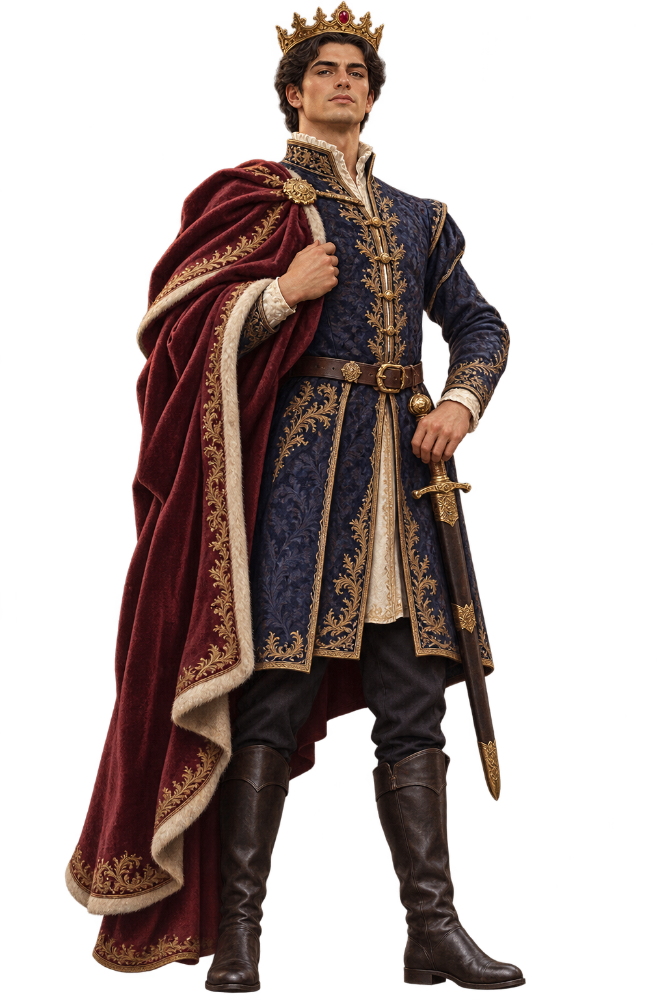

Traje Imperial
Seu nickname
Épico · desbloqueio a definir · progressão ou compraIdentidade para NPC
Lucien, O Altivo
Governa com ambição e presença, cobrando de si e da corte um padrão elevado. Inspira confiança ao assumir a frente das crises, mas precisa aprender a ouvir quem não se deixa impressionar pela coroa.